웍스AI 관리자 교육 | 운영 담당자 편
사용자, 비용, 에이전트, 보안을 한 번에 익힙니다
오른쪽 화살표 키 또는 화면 오른쪽을 눌러 넘기세요
오늘의 순서
워크스페이스, 부서, 사용자 (30분)
한도, 모델, 이용 현황, 결제 (40분)
공식 에이전트, 도구, 스킬 (40분)
접근 통제, 가드레일, 기록 (35분)
문의 대응, 점검 주기 (20분)
우리 회사 환경 세팅 (15분)
관리자의 역할
누가, 어디에 속해, 무엇을 쓰는지 정한다
얼마까지, 어떤 모델과 데이터까지 허용할지 정한다
공식 에이전트, 도구, 스킬을 골라 배포한다
1. 조직과 사용자
워크스페이스, 부서, 사용자를 먼저 정합니다
1. 조직과 사용자
메뉴 옆 파란 점은 최근 업데이트된 메뉴입니다.
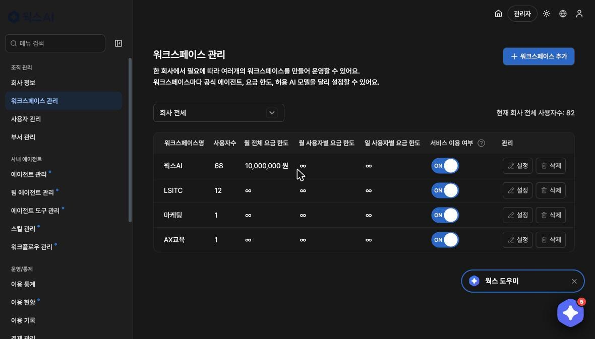
조직 관리, 사내 에이전트, 운영과 통계, 설정과 보안 네 묶음입니다.
오른쪽 위 버튼으로 열며 일반 직원에게는 보이지 않습니다.
1. 조직과 사용자
공식 에이전트, 요금 한도, 허용 모델을 워크스페이스마다 다르게 정합니다.
이름, 사용자 수, 월 전체와 사용자별 한도를 한 표로 봅니다.
ON/OFF로 워크스페이스 이용을 켜고 끕니다.
1. 조직과 사용자
| 설정 | 역할 | 비고 |
|---|---|---|
| 월 전체 요금 한도 | 넘으면 구성원 전체 대화 차단 | 0원 입력 시 무제한, 부가세 별도 |
| 월 사용자별 요금 한도 | 초과한 사람만 차단 | 0원 입력 시 무제한 |
| 일 사용자별 요금 한도 | 하루 한도, 매일 0시 재시작 | 월 한도와 함께 적용 |
| 단일 입력 최대 글자 수 | 한 번에 넣을 글자 수 제한 | 0이면 제한 없음 |
| 도구 호출 자동 승인 | 승인 요청 없이 도구 사용 권고 | 대화별 변경 가능 |
| 내부 도구 차단 | 코드 실행, 이미지 생성 등 차단 | 다음 장 참고 |
기본값은 모두 무제한입니다. 설정하지 않으면 한도가 없는 상태입니다.
1. 조직과 사용자
외부 접근이나 실행이 필요 없으면 끕니다.
비용이 큰 기능은 필요한 곳만 켭니다.
파일과 외부 문서를 읽는 기능은 보안 정책과 정합니다.
자동 반복 실행은 비용이 쌓이기 쉽습니다.
처음에는 필요한 기능만 열고 늘려 가는 방식을 권합니다.
1. 조직과 사용자
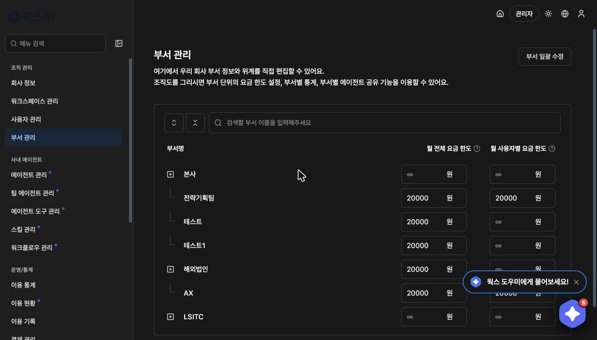
부서별 월 전체와 월 사용자별 한도를 둡니다.
상위 부서 아래에 하위 부서를 계속 추가합니다.
팀 에이전트 노출과 부서별 비용 집계에 쓰입니다.
1. 조직과 사용자
이름과 이메일, 워크스페이스와 부서를 넣고 한 명씩 초대합니다.
엑셀 양식으로 여러 명을 한 번에 등록합니다.
회사 메일로 가입하고 관리자가 승인해 활성화합니다.
관리자가 초대한 사용자는 수동 승인을 켜 두어도 바로 활성 상태가 됩니다.
1. 조직과 사용자
이름과 이메일은 블러 처리했습니다.
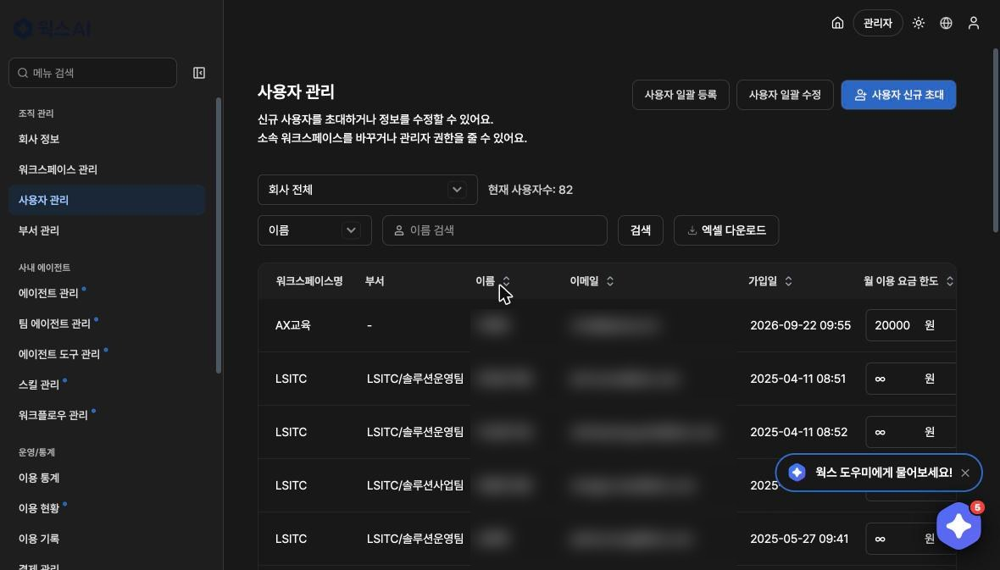
일괄 등록, 일괄 수정, 신규 초대가 같은 줄에 있습니다.
사용자 목록을 내려받습니다.
개인 한도가 기본 한도를 대체하는지는 확인필요입니다.
실습 A | 15분
몇 개가 필요한지 정하고 목록을 봅니다.
하위 부서를 2개 이상 만듭니다.
테스트 사용자 1명에 부서를 지정합니다.
최고 관리자 목록을 줄일 수 있는지 봅니다.
2. 비용 통제
한도, 모델, 모니터링 세 가지를 함께 합니다
2. 비용 통제
월 전체 한도
넘으면 전원 차단
부서 전체와 1인당
부서별로 나눠 설정
월 한도와 일 한도
넘은 사람만 차단
가장 먼저 도달한 한도가 적용됩니다. 한도는 안전망이며 습관 교육과 함께 써야 합니다.
2. 비용 통제
금액은 협의 후 입력합니다. [금액]은 비워 둔 값입니다.
회사 예산에서 거꾸로 정합니다.
폭주를 막도록 낮게 시작합니다.
일 한도 x 근무일을 넘지 않게 둡니다.
이용 현황을 보고 올리거나 내립니다.
LS ITC 권장안입니다. 제조사 공식 권고가 아닙니다.
2. 비용 통제
고성능 모델은 특정 부서나 사람에게만 열어 주는 방식이 대표 사례입니다.
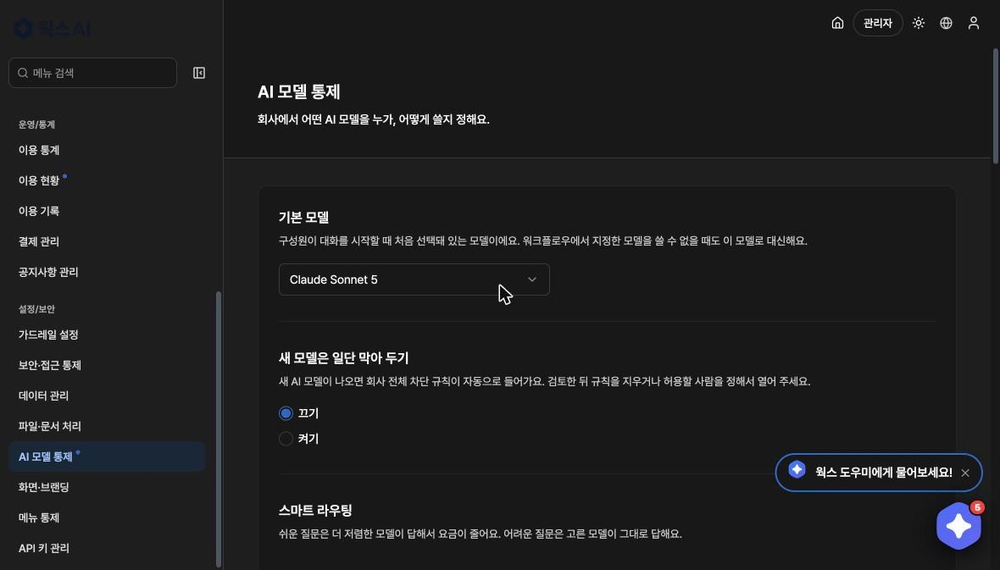
대화를 시작할 때 처음 선택되는 모델입니다.
켜면 새 모델에 회사 전체 차단 규칙이 자동으로 들어갑니다.
2. 비용 통제
| 끄기 | 선택 적용 | 전체 적용 | |
|---|---|---|---|
| 작동 시점 | 안 함 | Auto를 고른 대화만 | 모든 대화 |
| 기준 모델 | 없음 | 회사 기본 모델 | 사용자가 고른 모델 |
| 사용자 화면 | 그대로 | 목록에 Auto 추가 | 그대로 |
| 모델 차단 | 항상 적용 | 일부 예외 있음 | 일부 예외 있음 |
전체 적용에는 권장 표시가 있고, 켤 때 별도 동의 절차가 있습니다. 미리 설명하세요.
2. 비용 통제
| 기능 | 켜면 | 주의 |
|---|---|---|
| 이미지 고품질 모델 비활성화 | 이미지 한 장당 비용 감소 | 모든 이미지 품질이 낮아짐 |
| DeepL 번역 엔진 중지 | 자체 엔진만 사용해 절감 | 번역 품질을 샘플로 확인 |
| RAG 검색 개선 | 끄면 비용이 줄 수 있음 | 검색 정확도가 낮아짐 |
| 메모리 기능 | AI가 사용자 정보를 기억 | 개인정보 정책을 먼저 확인 |
비용 감소와 품질 저하는 맞바꿈입니다. 업무 성격에 따라 고르세요.
2. 비용 통제
어제까지 집계된 값입니다. 금액은 블러 처리했습니다.
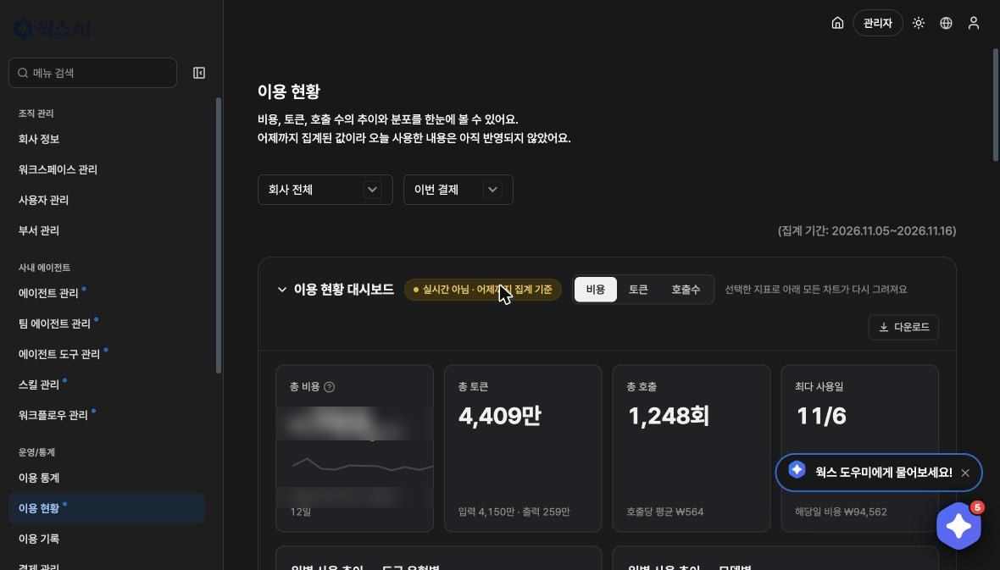
비용, 토큰, 호출수 중 하나를 고르면 모든 차트가 바뀝니다.
총 비용, 토큰, 호출, 최다 사용일입니다.
회사 전체나 워크스페이스, 이번 결제 기간을 고릅니다.
2. 비용 통제
회사 전체나 워크스페이스, 기간을 고릅니다.
사용자별, 도구별, 워크스페이스별, 부서별 탭입니다.
통계와 Raw data를 엑셀로 분석합니다.
횟수에 비해 토큰이 유난히 큰 항목이 점검 대상입니다. 이메일 노출에 주의하세요.
2. 비용 통제
이용 현황 일별 추이
모델별, 실행 경로별
이용 통계에서 횟수 대비 토큰
워크플로우와 대화 예약
습관 교육과 한도 조정
긴 대화 반복, 큰 파일 첨부, 자동 반복 실행이 대표 원인입니다.
2. 비용 통제
청구서 수신 이메일과 세금계산서 설정도 같은 화면에 있습니다. 리셀러 계약은 청구 방식이 다를 수 있어 확인필요입니다.
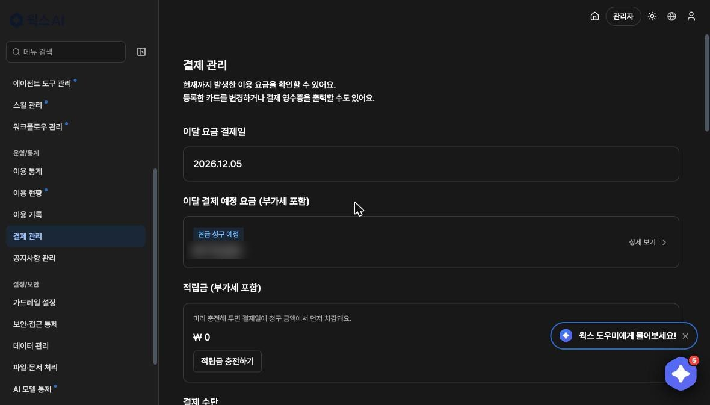
이달 결제일을 확인합니다.
부가세 포함 예정 요금과 상세 보기입니다. 금액은 블러 처리했습니다.
미리 충전하면 결제일에 먼저 차감됩니다.
2. 비용 통제
화면 표시 금액이며 부가세 별도입니다. 확인필요.
| 부가서비스 | 화면 표시 과금 | 위치 |
|---|---|---|
| 가드레일 | 일 10,000원부터 | 가드레일 설정 |
| 접속 및 파일 다운로드 통제 | 회사당 일 3,000원 | 보안·접근 통제 |
| 이용 기록 | 회사당 일 8,000원 | 데이터 관리 |
| 대화·파일 삭제 정책 | 회사당 일 5,000원 | 데이터 관리 |
| AI 문서 인식 향상(OCR) | 일 4,000원부터 | 파일·문서 처리 |
켜 두신 날짜만큼만 계산되어 후불 청구에 합산됩니다.
실습 B | 10분
워크스페이스와 일 사용자별 한도를 입력합니다.
기본 모델과 새 모델 막기를 정합니다.
세 옵션 중 하나를 고릅니다.
모델별, 사용자별 차트를 설명합니다.
3. 에이전트와 도구
누가 어디까지 만들 수 있는지부터 봅니다
3. 에이전트와 도구
| 종류 | 만드는 곳 | 노출 방식 |
|---|---|---|
| 나만의 에이전트 | 사용자 홈 | 본인만 |
| 팀 에이전트 | 팀 에이전트 관리 | 같은 부서에 즉시 노출 |
| 워크스페이스 공식 | 에이전트 관리 | 노출 대기중에서 검수 후 |
| 전사 공식 | 에이전트 관리(전사) | 노출 대기중에서 검수 후 |
관리자는 마지막 두 단계와 등록 신청 승인의 책임자입니다.
3. 에이전트와 도구
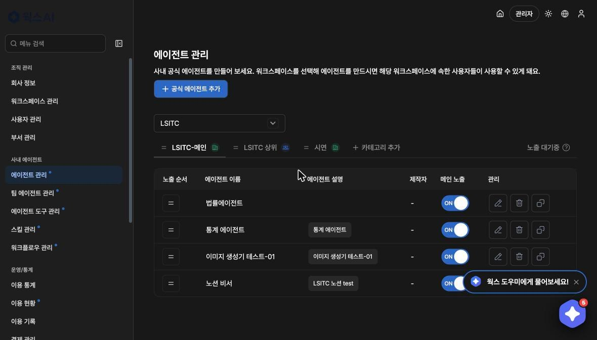
모델, 이름, 지시문, 파일, 도구를 설정합니다.
워크스페이스 또는 전사를 선택합니다.
검수 전 에이전트가 모이는 곳입니다.
켜야 사용자 화면에 나타납니다.
3. 에이전트와 도구
사용자가 등록 신청을 누릅니다.
신청된 에이전트가 목록에 들어옵니다.
이름, 지시문, 도구, 파일을 점검합니다.
메인 노출을 켜면 공식이 됩니다.
이름, 아이콘, 설명, 지시문, 도구, 참고 파일
대화 내역, 메모리, 로그인 토큰, 파일 다운로드
3. 에이전트와 도구
| 점검 | 확인할 내용 |
|---|---|
| 이름과 설명 | 회사 공식 자산으로 알맞고 명확한가 |
| 지시문 | 민감정보나 규정 위반, 과도한 길이가 없는가 |
| 참고 파일 | 전 직원에게 보여도 되는가 |
| 도구 | 필요한 것만 최대 5개인가 |
| 테스트 | 대표 질문과 틀리기 쉬운 질문을 확인했는가 |
| 비용 | 도구와 파일이 많아 매 질문 비용이 커지지 않는가 |
법령, 계약, 인사 에이전트는 담당 부서 검토를 받게 합니다.
3. 에이전트와 도구
사내 시스템 연결은 보안 검토와 범위 정의가 먼저입니다.
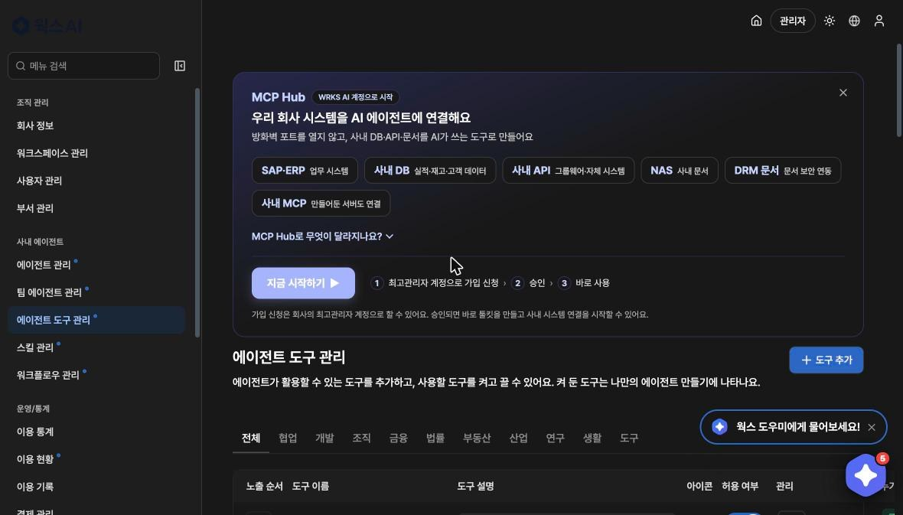
방화벽 포트를 열지 않고 사내 DB, API, 문서를 도구로 만듭니다.
사내 시스템 연결용 도구를 새로 추가합니다.
ON인 도구만 에이전트 만들기에 나타납니다.
3. 에이전트와 도구
켜고 끌 수 있고 끈 스킬은 어디서도 쓸 수 없습니다.
보수적이면 끕니다.
파일로 등록해 /스킬이름으로 부릅니다.
필요한 것만 노출하고 슬랙 연동은 기본 꺼짐입니다.
스킬에 개인정보, 비밀번호, 인증키를 넣지 않습니다.
3. 에이전트와 도구
메뉴 통제는 화면 진입을, 도구 통제는 에이전트 안 기능을 제어합니다.
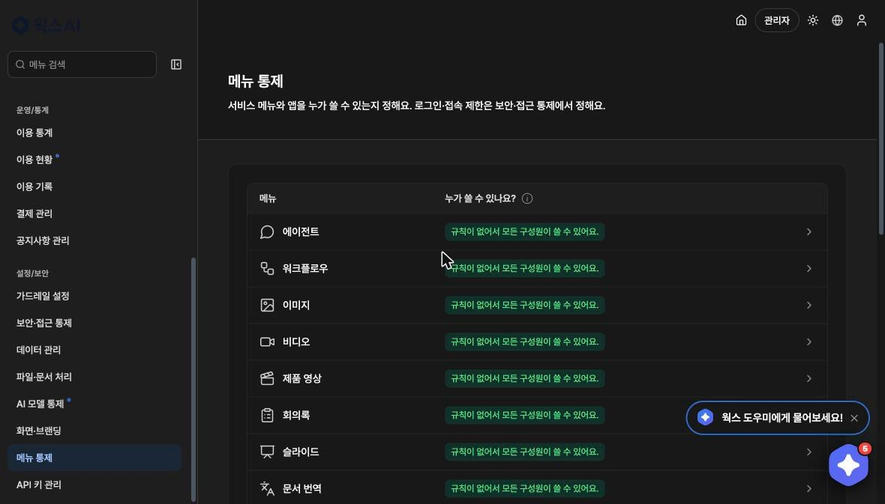
기본은 모든 구성원이 쓸 수 있습니다.
비용이 큰 이미지, 비디오 메뉴는 필요한 부서에만 엽니다.
실습 C | 15분
테스트 에이전트를 노출 대기중으로 둡니다.
체크리스트 후 메인 노출을 켭니다.
테스트 도구를 특정 사용자만 쓰게 합니다.
필요한 공식 스킬만 남깁니다.
4. 보안과 데이터
켤 것과 켜지 않아도 될 것을 나눕니다
4. 보안과 데이터
| 단계 | 설정 | 비고 |
|---|---|---|
| 1. 처음부터 | 최고 관리자 최소화, 2FA, 가입 수동 승인 | 추가 요금 없음(확인필요) |
| 2. 권장 | 개인정보 입력 차단, 금칙어, 파일 형식 제한 | 대부분 무료 |
| 3. 필요할 때 | IP 통제, 이용 기록, 삭제 정책, 코어핀, OCR | 부가서비스 요금 발생 |
LS ITC 권장안입니다. 고객 보안 정책에 맞춰 조정합니다.
4. 보안과 데이터
허용 IP를 잘못 등록하면 관리자도 접속하지 못할 수 있습니다.
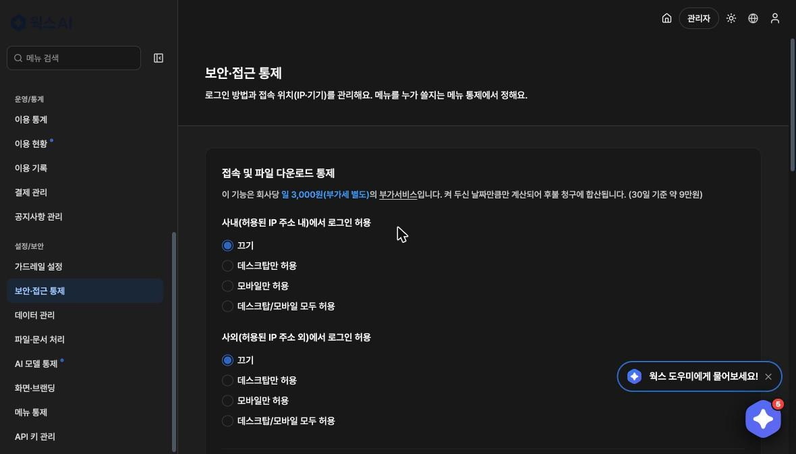
데스크탑, 모바일, 둘 다, 끄기 중에서 정합니다.
허용 IP 밖 접속을 따로 정합니다.
회사당 일 3,000원, 켠 날만큼 과금됩니다.
4. 보안과 데이터
개인정보 입력 차단, 금칙어, 정규식 패턴도 같은 화면에서 설정합니다.
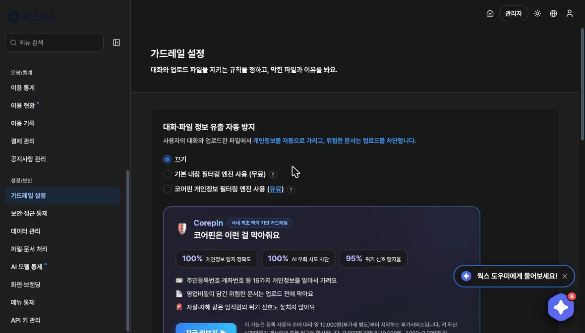
끄기, 기본 내장 엔진(무료), 코어핀(유료) 중 고릅니다.
개인정보 탐지와 위험 문서 업로드 차단을 합니다. 유료 부가서비스입니다.
4. 보안과 데이터
스캔 문서는 OCR로 읽습니다. 유료입니다.
제한 없음 또는 허용 목록만 둡니다.
로그인, 업로드, 다운로드를 기록하는 부가서비스입니다.
지정한 일수 뒤 대화와 첨부파일을 자동 삭제합니다.
임직원 대화 다운로드는 프라이버시 침해 위험이 매우 커서 법무와 정책을 먼저 정합니다.
실습 D | 15분
2FA와 가입 수동 승인 위치를 확인합니다.
금칙어를 넣고 시험 문장을 입력합니다.
허용 형식과 안내 문구를 정합니다.
켜기 전 요금 안내를 읽습니다.
5. 일상 운영
문의 대응과 점검 주기를 정합니다
5. 일상 운영
| 문의 | 먼저 확인할 곳 |
|---|---|
| 로그인을 못 해요 | 사용자 관리, 접근 통제, 2FA 해제 |
| 한도가 넘어서 막혔어요 | 사용자, 부서, 워크스페이스 한도 중 어디인지 |
| 요금이 달라요 | 이용 통계, 이용 현황, 부가서비스 켜짐 여부 |
| 에이전트가 안 보여요 | 노출 대기중, 메인 노출, 부서 지정 |
| 도구가 만료됐대요 | 사용자가 도구 카드를 눌러 다시 로그인 |
5. 일상 운영
이용 현황에서 급증한 날과 상위 사용자, 모델을 봅니다.
입퇴사 반영, 최고 관리자, 에이전트 노출 목록을 정리합니다.
예정 요금과 부가서비스 켜짐 여부를 확인합니다.
업데이트 팝업은 관리자에게만 보입니다. 릴리즈 노트도 주 1회 확인하세요.
5. 일상 운영
워크스페이스, 부서, 사용자
무제한으로 두지 않기
2FA, 가입 승인, 입력 차단
필요한 것만 노출
직원 교육, 문의 창구
종합 실습 | 15분
직원 100명 제조기업, 부서 5개로 가정합니다.
워크스페이스, 부서, 한도, 모델, 보안을 표로 정리합니다.
조별로 발표하고 빠진 부분을 짚습니다.
마무리
기본값은 무제한이므로 한도와 모델 정책을 먼저 정한다
부서를 지정해야 팀 에이전트와 부서별 비용이 작동한다
공식 에이전트는 노출 대기중에서 검수한 뒤에만 켠다
부가서비스는 켠 날만큼 과금되므로 요금을 확인하고 켠다
정기 점검과 업데이트 확인을 습관으로 만든다
문의: 웍스AI 담당자 [부서명과 연락처 입력]